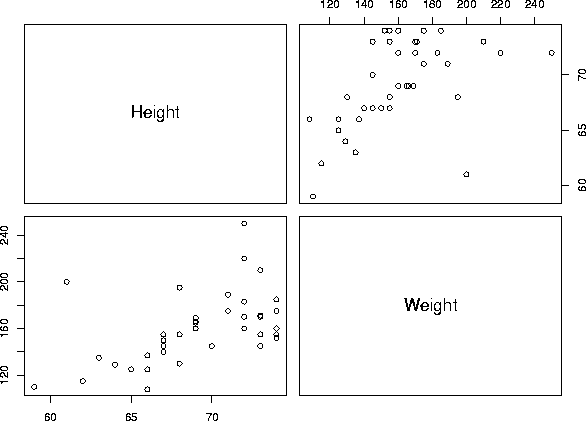
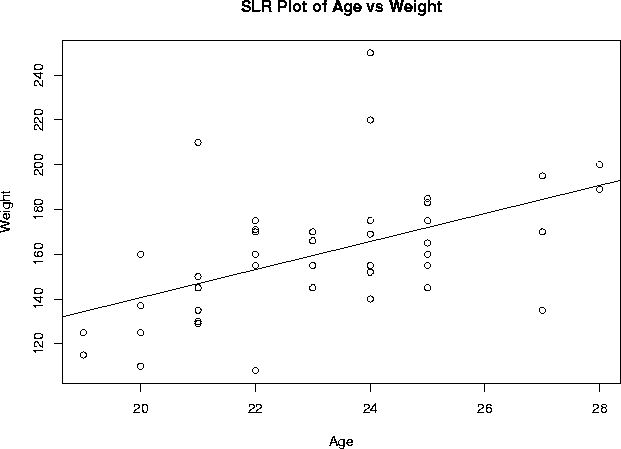
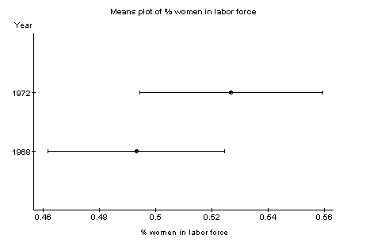

1) R
I carried out the analysis in both the point-and-click modules version of R and the code driven version of Rweb, and found the results to be the same.
Exercise 3: Statistics for height and weight
a) Summary statistics:
Height Weight Median :69.00 Median :155.0 Std Dev: 3.98 Std Dev: 28.9
b) Correlation between height and weight:
0.5379353
c) Scatterplot:

Excercise 4: Regression of weight and age
Coefficients:
Estimate Std. Error t value Pr(>|t|) (Intercept) 15.231 38.134 0.399 0.691668 Age 6.269 1.645 3.812 0.000455
Residual standard error: 25.09 on 41 degrees of freedom Multiple R-Squared: 0.2617, Adjusted R-squared: 0.2437 F-statistic: 14.53 on 1 and 41 degrees of freedom, p-value: 0.0004551

2) Rice virtual lab in statistics:
I performed the exercise 2 as the homework for this package, however none of the output windows let you copy their contents so I report only briefly the results:
a) Weight- mean 159.86, median 155.00, sd 28.85 Height- mean 69.116, median 69.00, sd 3.983 b) The predictor variable is age and the dependent variable is weight. R equals 0.5115. c) Eyecolor does not have a significant influence on weight (F= 1.00994, df=42, p= 0.3733)
3) Master solution to Webstats homework
To complete the homework, it was necessary to use the data set on Labor force available as a sample data set in the site under ‘data’, ‘sample data sets’, ‘labor force’.
To provide a brief statement on what the data set is measuring, we need to look at the file describing the data set on the help/documentation page. We would then find that the data set measures the labor force participation rate of women for 19 cities and two years: 1968 and 1972.
To analyze for differences between 1968 and 1972 in the measured variable we could use a paired t-test. This can be done by clicking ‘stat’, ‘t-test’, ‘paired’. We would generate the following results, and conclude that there was a significant difference (at alpha = 0.05) in the labor force participation rate of women living in the 19 cities between 1968 and 1972 (p=0.0244). The participation rate was higher in 1972 (mean 0.53) than in 1968 (mean 0.49).
Difference Delta0 Estimate Std. Err. DF 1968 - 1972 0 -0.03368421 0.013705561 18 Difference Tstat Pval 1968 - 1972 -2.4577038 0.0244
The summary statistics of interest can be generated by clicking ‘stat’, ‘summary statistics’:
Variable n Mean Variance Std. Dev. Median 1968 19 0.4931579 0.004622807 0.06799123 0.5 1972 19 0.5268421 0.005011696 0.07079333 0.53 Variable Range Min Max Q1 Q3 1968 0.29 0.34 0.63 0.45 0.54 1972 0.29 0.35 0.64 0.49 0.57
I decided a means plot demonstrated nicely the difference in the participation rate of women in the labor force between the two years, but many graphics could have been used here.

4) Statlets:
The 95% confidence interval is 68.2648, 70.7575. We reject the null hypothesis at 5% as p=0.0186. We know this to be the case as 68 does not fall within our confidence interval. A value of m between 68.2648 and 70.7575 would lead us to not reject at 5%.
5) XploRe
1) Histogram and Boxplot:
Sibling:
library("XploRe")
x = readm("user")
z = x.double[ , 3]
library ("plot")
plothist(z)
plotbox(z)
Weight:
library("XploRe")
x = readm("user")
z = x.double[ , 5]
library ("plot")
plothist(z)
plotbox(z)
2) Regression:
library("XploRe")
x = readm("user")
y = x.double[ , 4|5]
y1 = y[ , 1]
y2 = y[ , 2]
library("stats")
{b, bse, bstan, bpval} = linreg(y1, y2)
library("plot")
plot(y)
regy=grlinreg(y)
plot(y, regy)
Output of regression:
[ 2,] "A N O V A SS df MSS F-test P-value" [ 4,] "Regression 10118.023 1 10118.023 16.696 0.0002" [ 5,] "Residuals 24847.140 41 606.028" [ 6,] "Total Variation 34965.163 42 832.504" [ 8,] "Multiple R = 0.53794" [ 9,] "R^2 = 0.28937" [10,] "Adjusted R^2 = 0.27204" [11,] "Standard Error = 24.61763"